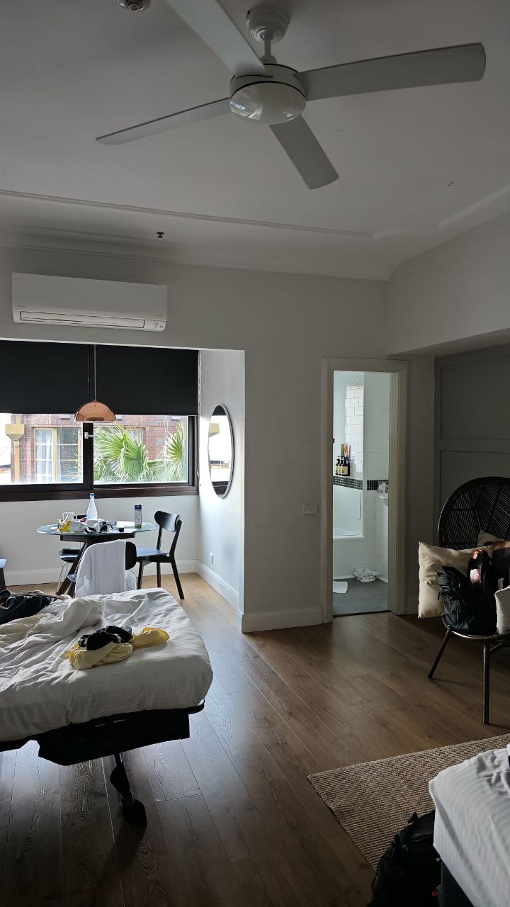

Stuff we did in Sydney
Cafes, Shopping, Whale Watching and more!

Sydney!! Just the loveliest city ever with tons of cafes, malls, and activities to take part in. The city is not unlike Melbourne, but with a more sophisticated air. Where Melbourne has streets of graffiti, Sydney has futuristic metropolitan buildings. Where Melbourne has hidden alleyways and nooks, Sydney's streets are wide open. Where Melbourne stays cold all through spring, you could step out in shorts and sandals in Sydney.
The city is warm and welcoming, with a chill breeze ever so slightly rustling the leaves above. The eucalyptus trees frame the coffee-charcoal streets, and for a moment everything comes to a peaceful pause. I love going for walks in the city, especially the streets of Potts Point. I could go for hours exploring the little bookstores and souvenir shops.
On the first day properly exploring the city (because before that I was just holed up at the dance event) we went about the area near Town Hall and Haymarket

 But of course, we couldn't continue without first getting our coffee/matcha fix.
Then we went to market city in Haymarket because I, on accident, stumbled into the cotton on there realizing everything was going for insanely low prices.
But of course, we couldn't continue without first getting our coffee/matcha fix.
Then we went to market city in Haymarket because I, on accident, stumbled into the cotton on there realizing everything was going for insanely low prices.
 $3-10 was the price for almost everything in the store?? It turned out everything at market city was something of an outlet store with all the brand shops selling their stuff at below average prices. I copped some $60 converse as well with tiny flower stitches hehe.
$3-10 was the price for almost everything in the store?? It turned out everything at market city was something of an outlet store with all the brand shops selling their stuff at below average prices. I copped some $60 converse as well with tiny flower stitches hehe.
After our shopping spree we thought we'd finally check in to our apartment at Potts Point, so we got a movin to the central station, the nearest metro (and also the main transit point of trains in Sydney). This place was huuuuuuge!
 The metro in Sydney has double-decker trains (?!) Never saw that before it was so coooool.
We got off at Kings Cross Station to walk to our BnB, but not without noticing this sign board.
The metro in Sydney has double-decker trains (?!) Never saw that before it was so coooool.
We got off at Kings Cross Station to walk to our BnB, but not without noticing this sign board.
 "Hoooolup there's a whole netflix show about the train station???" I don't know why we found it so funny but we continued laughing about it for the next 15 minutes. The slogan for the show is "Don't Cross The King" ??? 😭😭 PLEASE ITS SO SILLY
"Hoooolup there's a whole netflix show about the train station???" I don't know why we found it so funny but we continued laughing about it for the next 15 minutes. The slogan for the show is "Don't Cross The King" ??? 😭😭 PLEASE ITS SO SILLY
After that we checked into our cozy AirBnB at Potts Point (the name potts point is so cute and gardenly) before going to eat lunch at Betty's Burgers.

(big billboards be giving new york! also amazing work on the mural lovee)
 (didn't take any photos of the food because I was so ready to chow down but man it was gooood)
(didn't take any photos of the food because I was so ready to chow down but man it was gooood)
After lunch it was just about to be sunset so we thought why not we just uber on down to the opera house and harbour bridge. It was only about $3 per person to share so given the price of public transport here, I think it was a pretty economical decision hehe. And my oh my the sights that awaited us were just gorgeous TT

On the next day we went to whale watch at darling harbour. But of course, had to get some
scrumpteous breakfast at potts point. This cafe along the street of our BnB called Pina was bustling and the smell of bacon and spices pulled me to sit down before I knew it.
The boat ride under the bridge was just righteously epic and the whole boat ride felt like a rollercoaster because of how huge the waves were. At one point the boat flew so high I felt my feet lift off the ground! I didn't take many photos because I wanted to keep my phone dry but Cheyne took this from the upper deck and it's just voibes.
Afterwards we walked around the harbour, and checked out a vibey bookstore along the way.
Next was the melbourne museum but unfortunately I was feeling a little sick, probably because I didn't cover up properly on the boat ride and boi it was cold. I felt a small fever creeping up on me so we didn't stay too long at the museum. There was some cool exhibits tho!
For dinner we headed up Chaco Ramen after hearing recommendations for friends that it was good. It was a quiant tiny store located on a slanted street and we sat outside (rabak but also kinda vibes) The ramen was alright, not too bad but nothing particularly special either, but maybe I've just been spoiled by the ramens in Japan.
There was a bunch of other things we did too like visit Chinatown, go dessert hunting, the botanics etc, but in the interest of time and me wanting to get this blog out as soon as possible, Imma cut it short here for now :D do stay tuned folks!